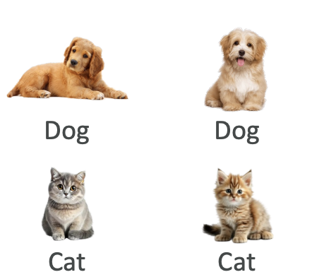
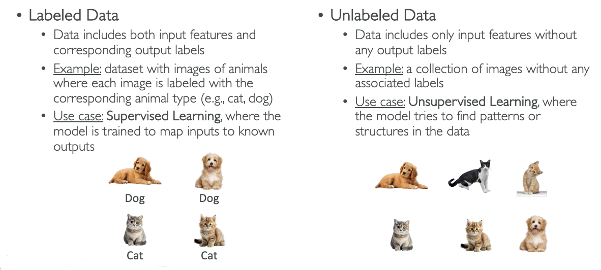
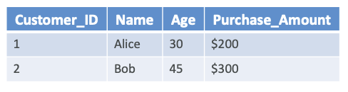
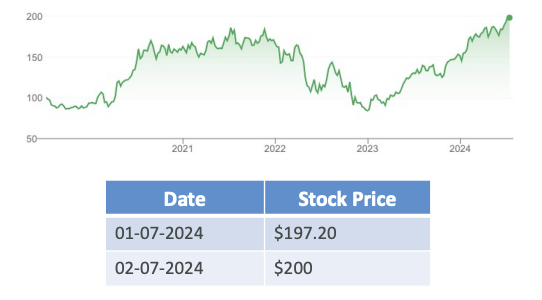
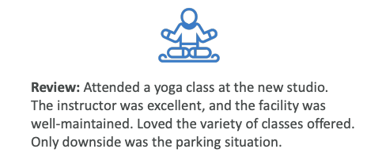

Training Data
Now let's talk about training data in the context of machine learning.
In machine learning, we need data to train our models, and on top of having data, we need good data. Good has to be defined, of course, but as a general effect, if you put bad data (called garbage) into your model, you're going to get garbage out of your model - meaning your model won't be good.
Training data, cleaning the data, and making sure that it is good for your use case is one of, if not the most critical stage to build a good model.
There are several options to model data, and this will impact the type of algorithms you can use to train your models. We'll cover two main categorizations:
- labeled versus unlabeled data, and
- structured versus unstructured data.
Labeled vs Unlabeled Data
Labeled Data
Labeled data is data that has both input features and output labels.
Example: Here we have some images of animals, and each image is going to be labeled with the corresponding animal type. In the image we have dogs, and cats

In this, image is itself input feature and the output label corresponds to what the image is (i.e. Cats or Dogs)
Key characteristics:
- When we have labeled data, it enables supervised learning.
- The algorithm learns to map inputs to known outputs like:
- We teach the algorithm that "this image should have a predicted value of dog, and we know it's a dog because we've labeled it"
Unlabeled Data
Unlabeled data only includes input features without any output labels.
Example: A collection of images without any associated labels:
- We have images (say, four cats and two dogs)
- We don't tell the algorithm "this is a dog" or "this is a cat"
- The algorithm must figure out that there is such thing as a cat and such thing as a dog.
Key characteristics:
- Enables unsupervised learning when there are no labels
- It is more complicated than supervised learning
- The algorithm finds patterns between things or structures in the data and groups them together
- It is used when you have so much data that it's very costly or simply impossible to label everything. (It is when you have too much unlabelled data)

This is why in the field of machine learning, we have algorithm for both of the use case of labeled and unlabeled data.
Structured vs Unstructured Data
Structured Data
Structured data is organized in a structured format, usually in rows and columns, just like in Microsoft Excel.
Tabular Data:
- Data is arranged in a table with rows representing records and columns representing features
- For example: Columns with Customer_ID, Name, Age, Purchase_Amount and with the rows

Time Series Data
- Data points collected or recorded at successive points in time
- Example: Stock price of a company over time
- You can have time series data in tabular format or simply two columns (Date and Stock Price)

In both of the cases of time series and tabular data, it is very easy to read it and very easy to structure the data.
Unstructured Data
Unstructured data is the data that doesn't follow a specific structure and is usually text-heavy or multimedia content.
Example 1: Text Data You have:
- Articles online
- Social media posts
- Customer review on your business
Then this data is considered unstructured data.
- For Example: Here is the review of a Yoga Class

This is long text with no structure except the fact that it is just a long text.
Example 2: Image Data
- Image data is unstructured data
- This is just pixels with no organized structure beyond the pixel data itself
So both of these: image and text data are unstructured with no specific organizational structure. We have specific type of algorithms to deal with this data.
Summary
Now we've learned about labeled and unlabeled data, the necessity of having good data for ML algorithms, and discussed structured and unstructured data. These concepts form the foundation for understanding how different types of data require different algorithmic approaches in machine learning.